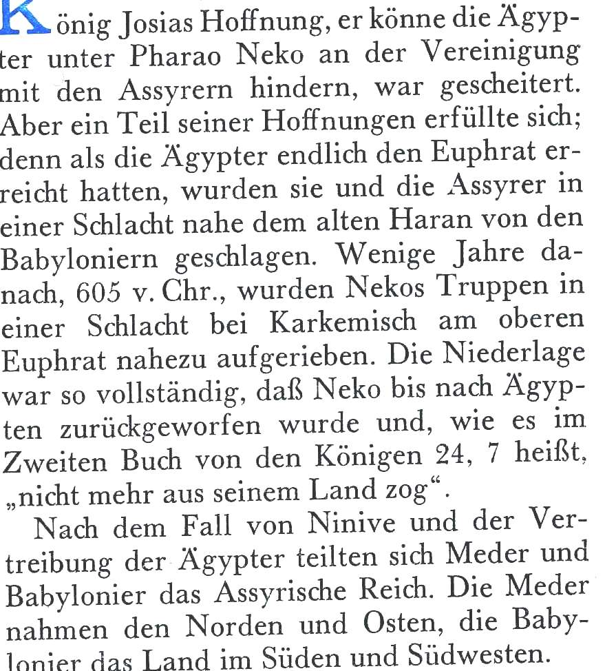

27 Bibelgeografie: Gefangenschaft in Babylon Quelle: Nelson B. Keyes: Vom Paradies bis Golgatha, Stuttgart 1964, S. 92-98
St. Markus · 2014 · Deutsch
ـ عيد النيروز أو عيد رأس السنة المصرية
Ausgabe 2 · Seite 27

St. Markus · 2014 · Deutsch
Ausgabe 2 · Seite 27

27 Bibelgeografie: Gefangenschaft in Babylon Quelle: Nelson B. Keyes: Vom Paradies bis Golgatha, Stuttgart 1964, S. 92-98